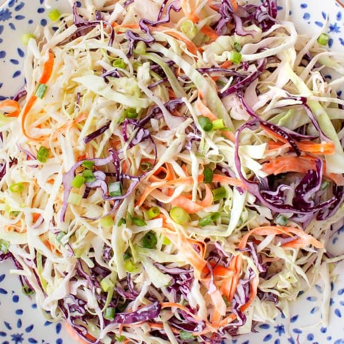

Creamy Coleslaw

Description
This easy coleslaw recipe is great for just about any occasion—a weeknight dinner, a cookout, or a fun picnic lunch.
Like all my favorite summer recipes, it’s packed with colorful veggies, and a lightly creamy, tangy dressing ties the whole thing together. It comes together in minutes, and it keeps well if you make it ahead of time.
Just add veggie burgers, and you’ve got a perfect summer meal!
Ingredients
- Cabbage
- Carrots
- Scallions
- Mayo
- ACV & Dijon Mustard
- Maple Syrup
- Celery Seeds
Steps
- First, make the dressing. Combine the mayonnaise, vinegar, mustard, maple syrup, celery seed, salt, and pepper in a medium bowl. Whisk until smooth!
- Then, combine the veggies. Add the scallions, red cabbage, green cabbage, and carrot to a large bowl, and toss to combine.
- Finally, mix it all together! Pour the dressing over the cabbage mixture, and toss to coat. Season to taste, and enjoy!